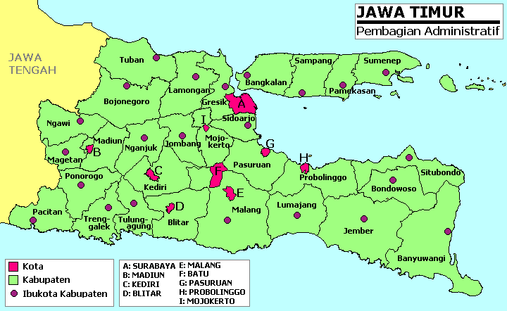
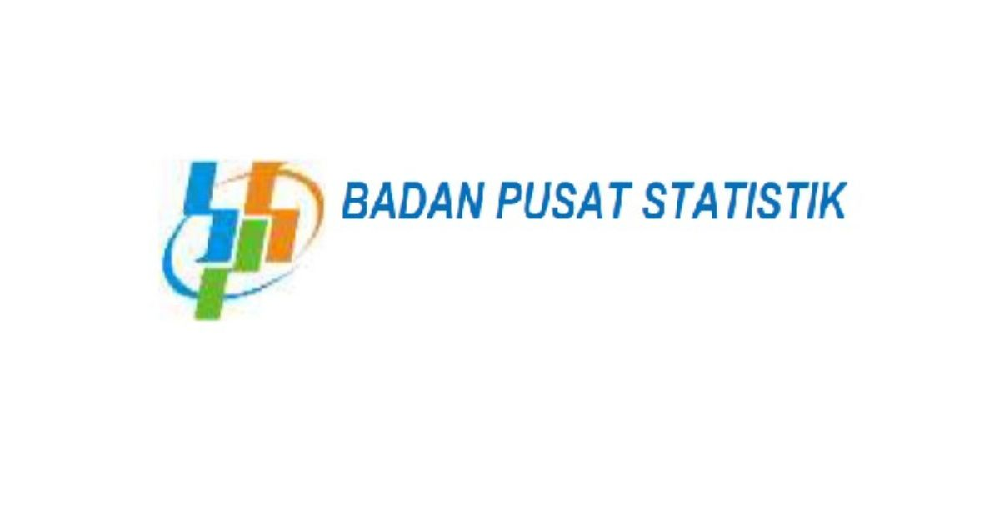
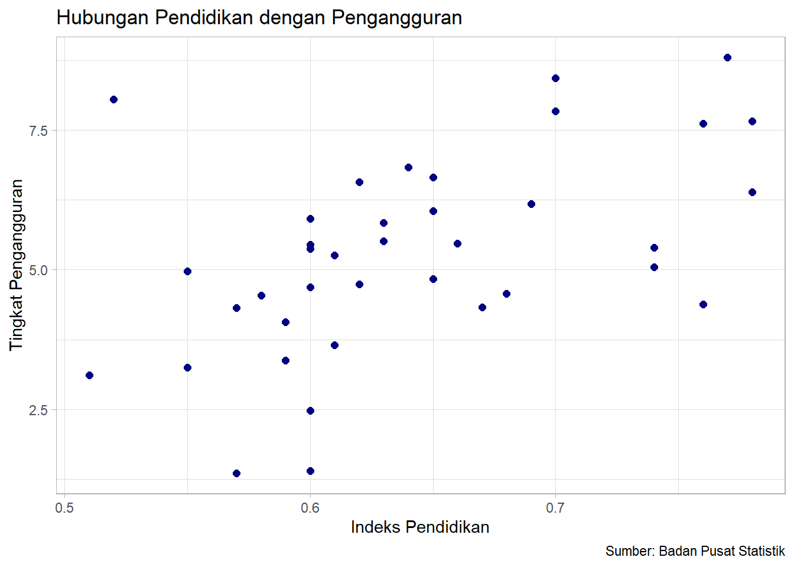

library("readxl")
library("ggplot2")Pengaruh Pendidikan terhadap Tingkat Pengangguran di Jawa Timur pada Tahun 2022
Metode Penelitian Politeknik APP Jakarta

1 Pendahuluan
1.1 Latar belakang
Pendidikan dan tingkat pengangguran memiliki peran sentral dalam dinamika ekonomi dan sosial suatu negara. Tingkat pengangguran menunjukkan keseimbangan antara pasokan dan permintaan tenaga kerja, sedangkan pendidikan memiliki peran yang sangat penting dalam membentuk struktur dan dinamika pasar tenaga kerja di suatu wilayah. Peningkatan tingkat pendidikan diharapkan dapat memberikan dampak positif terhadap penurunan tingkat pengangguran. Oleh karena itu, penelitian ini bertujuan untuk memahami bagaimana pengaruh pendidikan terhadap tingkat pengangguran di Jawa Timur pada tahun 2022.

1.2 Ruang lingkup
Ruang lingkup berfokus kepada analisis hubungan antara pendidikan dengan tingkat pengangguran, penelitian ini mencakup pengumpulan data dari sumber terpercaya terkait pendidikan dan tingkat pengangguran untuk menghasilkan temuan yang akurat dan relevan.
1.3 Rumusan masalah
Bagaimana tingkat pendidikan penduduk di Jawa Timur pada tahun 2022?
Bagaimana tingkat pengangguran di Jawa Timur pada tahun 2022?
Apakah terdapat hubungan signifikan antara kedua variabel?
1.4 Tujuan dan manfaat penelitian
Tujuan penelitian ini adalah untuk mengetahui bagaimana keadaan pendidikan dan pengguran di Jawa Timur pada tahun 2022. Dengan adanya penelitian ini diharapkan agar masyarakat dan pemerintah lebih terbuka terhadap pentingnya pendidikan agar tidak berdampak kepada peningkatan pengangguran.
1.5 Package
Packages yang digunakan antara lain sebagai berikut:
2 Studi pustaka
Pendidikan
Peran penting dari pendidikan dalam kemajuan perekonomian adalah kemampuan untuk mengurangi tingkat pengangguran, meningkatkan kesejahteraan masyarakat, dan peningkatan kualitas sumber daya manusia. Pendidikan adalah kunci dalam kemampuan dari sebuah negara berkembang untuk menyerap teknologi modern dan mengembangkan kemampuan tersebut untuk tumbuh menjadi negara maju (Todaro & Smith, 2012).
Pengangguran Terdidik
Pengangguran terdidik adalah angkatan kerja yang berpendidikan menengah ke atas yaitu SMA, Diploma, dan sarjana yang tidak bekerja.
3 Metode penelitian
3.1 Data
Data yang digunakan adalah indeks pendidikan dan tingkat pengangguran terbuka di Jawa Barat pada tahun 2022 yang didapatkan dari Badan Pusat Statistik.

| Kota/Kabupaten | Pendidikan(%) | Pengangguran(%) |
|---|---|---|
| Kab. Pacitan | 0.61 | 3.65 |
| Kab. Ponorogo | 0.63 | 5.51 |
| Kab. Trenggelek | 0.6 | 5.37 |
| Kab. Tulungagung | 0.65 | 6.83 |
| Kab. Blitar | 0.6 | 5.45 |
| Kab. Kediri | 0.64 | 6.83 |
| Kab. Malang | 0.62 | 6.57 |
| Kab. Lumajang | 0.55 | 4.97 |
| Kab. Jember | 0.59 | 4.06 |
| Kab. Banyuwangi | 0.61 | 5.26 |
| Kab. Bondowoso | 0.57 | 4.32 |
| Kab. Situbondo | 0.59 | 3.38 |
| Kab. Probolinggo | 0.55 | 3.25 |
| Kab. Pasuruan | 0.6 | 5.91 |
| Kab. Sidoarjo | 0.77 | 8.8 |
| Kab. Mojokerto | 0.65 | 4.83 |
| Kab. Jombang | 0.66 | 5.47 |
| Kab. Nganjuk | 0.62 | 4.74 |
| Kab. Madiun | 0.63 | 5.84 |
| Kab. Magetan | 0.67 | 4.33 |
| Kab. Ngawi | 0.6 | 2.48 |
| Kab. Bojonegoro | 0.6 | 4.69 |
| Kab. Tuban | 0.58 | 4.54 |
| Kab. Lamongan | 0.65 | 6.05 |
| Kab. Gresik | 0.7 | 7.84 |
| Kab. Bangkalan | 0.52 | 8.05 |
| Kab. Sampang | 0.51 | 3.11 |
| Kab. Pamekasan | 0.6 | 1.4 |
| Kab. Sumenep | 0.57 | 1.36 |
| Kota Kediri | 0.76 | 4.38 |
| Kota Blitar | 0.74 | 5.39 |
| Kota Malang | 0.78 | 7.66 |
| Kota Probolinggo | 0.68 | 4.57 |
| Kota Pasuruan | 0.69 | 6.18 |
| Kota Mojokerto | 0.74 | 5.05 |
| Kota Madiun | 0.78 | 6.39 |
| Kota Surabaya | 0.76 | 7.62 |
| KOta Batu | 0.7 | 8.43 |
library("readxl")
dat<-read_excel("data metopel.xlsx")
head(dat)# A tibble: 6 × 2
Pendidikan Pengangguran
<dbl> <dbl>
1 0.61 3.65
2 0.63 5.51
3 0.6 5.37
4 0.65 6.65
5 0.6 5.45
6 0.64 6.833.2 Metode analisis
Penelitian ini dilakukan dengan menggunakan metode regresi univariat atau Ordinary Least Square dengan 1 variabel independen. Hasil regresi ini nantinya akan menunjukkan hubungan antara pendidikan dengan tingkat pengangguran. Spesifikasi yang dilakukan adalah:
\[ y_{t}=\beta_0 + \beta_1 x_t+\mu_t \] di mana \(y_t\) adalah indeks pendidikan dan \(x_t\) adalah tingkat penangguran.
4 Pembahasan
4.1 Pembahasan masalah
Apabila pendidikan dengan tingkat pengangguran dihubungkan, tampilannya akan seperti ini.
library("readxl")
library("ggplot2")
ggplot(data=dat,aes(x=Pendidikan,y=Pengangguran)) +
geom_point(color="navy",size=2) +
labs(title="Hubungan Pendidikan dengan Pengangguran",
x="Indeks Pendidikan",
y="Tingkat Pengangguran",
caption = "Sumber: Badan Pusat Statistik") +
theme_light()
4.2 Analisis masalah
Hasil regresinya akan menjadi seperti berikut.
reg<-lm(Pengangguran~Pendidikan,data=dat)
summary(reg)
Call:
lm(formula = Pengangguran ~ Pendidikan, data = dat)
Residuals:
Min 1Q Median 3Q Max
-3.3583 -1.0560 -0.0025 0.8030 4.2886
Coefficients:
Estimate Std. Error t value Pr(>|t|)
(Intercept) -2.718 2.255 -1.205 0.23590
Pendidikan 12.461 3.495 3.566 0.00105 **
---
Signif. codes: 0 '***' 0.001 '**' 0.01 '*' 0.05 '.' 0.1 ' ' 1
Residual standard error: 1.547 on 36 degrees of freedom
Multiple R-squared: 0.261, Adjusted R-squared: 0.2405
F-statistic: 12.72 on 1 and 36 DF, p-value: 0.0010475 Kesimpulan
Dari hasil regresi tersebut dapat disimpulkan bahwa kedua variabel memiliki hubungan yang signifikan. Di mana pendidikan yang tinggi cenderung meningkatkan keterampilan dan kualifikasi tenaga kerja yang dapat mendorong inovasi, produktivitas, dan meningkatkan daya saing ekonomi. Oleh karena itu, perlu upaya lebih lanjut untuk meningkatkan kualitas pendidikan di Jawa Timur maupun di seluruh Indonesia untuk menciptakan lebih banyak sumber daya manusia yang berkualitas.
6 Referensi
Badan Pusat Statistik. (t.t.). Diambil 25 Januari 2024, dari https://malangkota.bps.go.id/indicator/26/515/1/indeks-pendidikan-menurut-kabupaten-kota-di-jawa-timur.html
BPS Provinsi Jawa Timur. (t.t.). Diambil 25 Januari 2024, dari https://jatim.bps.go.id/indicator/6/54/1/tingkat-pengangguran-terbuka-tpt-provinsi-jawa-timur.html
Vidiasari, E. (2016). PENGARUH PERTUMBUHAN EKONOMI, UPAH MINIMUM, PENDIDIKAN DAN GENDER TERHADAP PENYERAPAN TENAGA KERJA DI KABUPATEN/KOTA PROVINSI JAWA TIMUR. Jurnal Ilmiah Mahasiswa FEB Universitas Brawijaya, 4. https://jimfeb.ub.ac.id/index.php/jimfeb/article/view/3306